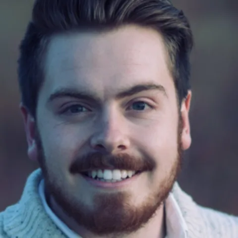
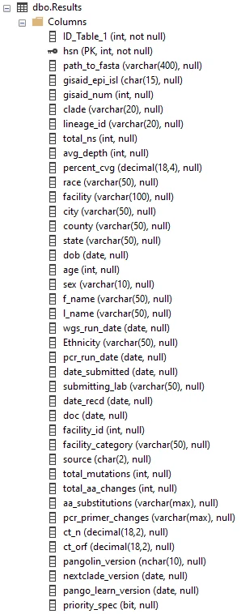
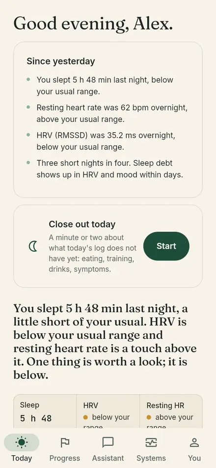
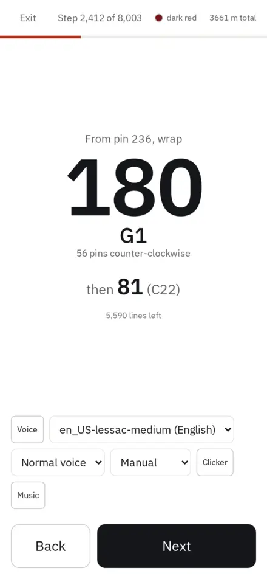
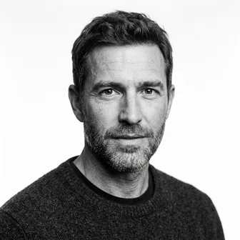
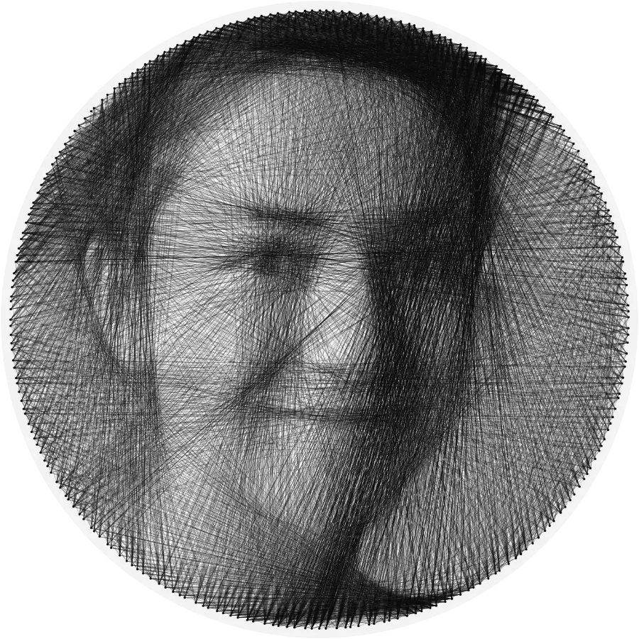
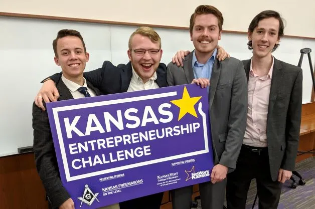

<title>Jonathan Barnell Portfolio</title>
<meta name="claude:viewport-fit-sides" content="cover">
<style>
@font-face{font-family:"Red Hat Display";font-style:normal;font-weight:900;font-display:swap;src:url(fonts/red-hat-display-900.woff2) format("woff2")}
@font-face{font-family:"Red Hat Text";font-style:normal;font-weight:400 500;font-display:swap;src:url(fonts/red-hat-text.woff2) format("woff2")}
/* Layout: poster colour fields, one per chapter. A giant two-ink name, then typographic set pieces; pictures arrive large and few. */
:root{
  --white:#ffffff; --surface:#f3f3f3; --ink:#0a0a0a; --muted:#5e5e5e;
  --blue:#2436ff; --red:#ff3b1f; --navy:#050a5c; --black:#0a0a0a;
  --display:"Red Hat Display","Arial Black","Segoe UI Black",system-ui,sans-serif;
  --text:"Red Hat Text",system-ui,-apple-system,"Segoe UI",Roboto,sans-serif;
  --step-small:clamp(0.875rem,0.85rem + 0.1vw,0.9375rem);
  --step-body:clamp(1.0625rem,1rem + 0.25vw,1.1875rem);
  --step-lead:clamp(1.25rem,1.1rem + 0.7vw,1.625rem);
  --step-head:clamp(2.125rem,1rem + 5vw,5.5rem);
  --step-display:clamp(3.25rem,15.2vw,15.5rem);
  --m:clamp(16px,3vw,44px);
  --gap:clamp(16px,2vw,28px);
  --bar:52px;
  --ease:cubic-bezier(.2,.7,.2,1);
  color-scheme:light;
}
*,*::before,*::after{box-sizing:border-box}
html{scroll-behavior:smooth;scroll-padding-top:calc(var(--bar) + env(safe-area-inset-top,0px))}
body{margin:0;background:var(--white);color:var(--ink);font-family:var(--text);font-size:var(--step-body);line-height:1.5;-webkit-font-smoothing:antialiased;text-rendering:optimizeLegibility}
img{display:block;max-width:100%;height:auto}
[hidden]{display:none!important}
a{color:inherit}
p{margin:0}
h1,h2,h3{margin:0;font-family:var(--display);font-weight:900;text-transform:uppercase;letter-spacing:-0.03em;line-height:0.92;text-wrap:balance}
h2{font-size:var(--step-head)}
:focus-visible{outline:3px solid currentColor;outline-offset:3px}
::selection{background:var(--ink);color:var(--white)}
main:focus{outline:none}
html:not(.js) #st-canvas,html:not(.js) .strings .ctl{display:none}
.sr{position:absolute;width:1px;height:1px;overflow:hidden;clip-path:inset(50%);white-space:nowrap}
.skip{position:absolute;left:8px;top:8px;z-index:30;padding:10px 14px;background:var(--ink);color:var(--white);transform:translateY(-300%)}
.skip:focus{transform:none}

/* fields */
.band{background:var(--g);color:var(--i);--g:var(--white);--i:var(--ink);--soft:var(--muted);--tone:var(--surface)}
.f-blue{--g:var(--blue);--i:var(--white);--soft:#e3e6ff;--tone:#1c2bd6}
.f-red{--g:var(--red);--i:var(--ink);--soft:#2a0d06;--tone:#e8351b}
.f-navy{--g:var(--navy);--i:var(--white);--soft:#cdd1f7;--tone:#0b1278}
.f-black{--g:var(--black);--i:var(--white);--soft:#d0d0d0;--tone:#1c1c1c}
.f-surface{--g:var(--surface);--i:var(--ink);--soft:#555555;--tone:#e4e4e4}
.wrap{padding-left:max(var(--m),env(safe-area-inset-left,0px));padding-right:max(var(--m),env(safe-area-inset-right,0px));padding-block:clamp(72px,11vw,168px)}
.grid{display:grid;grid-template-columns:repeat(12,minmax(0,1fr));column-gap:var(--gap)}
.soft{color:var(--soft)}
.small{font-size:var(--step-small);line-height:1.45}
.lead{font-size:var(--step-lead);line-height:1.36}
.stack > * + *{margin-top:1.1em}
.tnum{font-variant-numeric:tabular-nums}
figure{margin:0}
figcaption{font-size:var(--step-small);margin-top:10px;color:var(--soft)}

/* button: one shape, square */
.btn{display:inline-flex;align-items:center;min-height:48px;padding:0 22px;background:var(--ink);color:var(--white);font-weight:500;text-decoration:none;font-size:var(--step-body);transition:transform .18s var(--ease),background-color .18s}
.btn:hover{background:#2b2b2b}
.btn:active{transform:translateY(1px) scale(.98)}
.link{text-decoration:underline;text-decoration-thickness:2px;text-underline-offset:4px;font-weight:500;transition:text-underline-offset .18s var(--ease)}
.link:hover{text-underline-offset:7px}
.f-navy .btn,.f-black .btn{background:var(--white);color:var(--ink)}
.f-navy .btn:hover,.f-black .btn:hover{background:var(--surface)}
.links .link,.foot .meta .link,td .link,.hero-row .link{display:inline-block;padding-block:10px}

/* bar: takes the ground and ink of the chapter beneath it */
.bar{position:fixed;inset:0 0 auto 0;z-index:20;height:calc(var(--bar) + env(safe-area-inset-top,0px));padding-top:env(safe-area-inset-top,0px);background:var(--hg,var(--blue));color:var(--hi,var(--white));transition:background-color .3s,color .3s;display:flex;align-items:center;justify-content:space-between;padding-left:max(var(--m),env(safe-area-inset-left,0px));padding-right:max(var(--m),env(safe-area-inset-right,0px));font-size:0.9375rem;font-weight:500}
.bar a{text-decoration:none;padding:12px 0}
.bar a:hover{text-decoration:underline;text-underline-offset:5px;text-decoration-thickness:2px}
.bar nav{display:flex;gap:clamp(14px,2.2vw,32px)}

/* hero */
.hero .wrap{min-height:100svh;padding-block:calc(var(--bar) + 9svh) clamp(24px,4vw,44px);display:grid;grid-template-rows:1fr auto}
.hero h1{font-size:var(--step-display);line-height:0.84;letter-spacing:-0.035em}
.hero h1 span{display:block}
.hero h1 .l2{color:var(--ink)}
.hero-foot{justify-self:end;width:min(100%,27rem);display:grid;gap:20px;justify-items:start;margin-top:40px}
.hero-row{display:flex;flex-wrap:wrap;align-items:center;gap:6px 22px}
.hero-links{display:flex;gap:22px}

/* about */
.about .facts{grid-column:1/5}
.about .say{grid-column:5/13}
.about h2{margin-bottom:clamp(24px,3vw,44px)}
.headshot{width:clamp(140px,22vw,320px);aspect-ratio:1;object-fit:cover;margin-bottom:28px}
dl{margin:0}
.kv{display:grid;gap:18px}
.kv dt{font-size:var(--step-small);color:var(--soft)}
.kv dd{margin:2px 0 0;font-size:var(--step-body);font-weight:500;line-height:1.35}
.recs{grid-column:1/13;margin-top:clamp(40px,5vw,72px);display:grid;grid-template-columns:repeat(2,minmax(0,1fr));gap:var(--gap) clamp(32px,5vw,64px)}
.rec h3{font-family:var(--text);font-weight:500;text-transform:none;letter-spacing:0;line-height:1.4;font-size:var(--step-small);color:var(--soft);margin-bottom:10px}
.rec ul{list-style:none;margin:0;padding:0}
.rec li{display:flex;justify-content:space-between;gap:16px;padding:7px 0}
.rec li span:last-child{color:var(--soft);white-space:nowrap}

/* poster list */
.poster .wrap{padding-block:clamp(64px,7vw,96px)}
.poster h2{font-family:var(--text);font-weight:500;font-size:var(--step-lead);text-transform:none;letter-spacing:0;line-height:1.3;margin-bottom:clamp(20px,3vw,40px)}
.poster ol{list-style:none;margin:0;padding:0}
.poster li{display:flex;align-items:baseline;justify-content:space-between;gap:20px}
.poster .w{font-family:var(--display);font-weight:900;text-transform:uppercase;letter-spacing:-0.035em;line-height:0.92;font-size:clamp(3rem,10vw,9.5rem);white-space:nowrap;transition:color .2s}
.poster li:hover .w{color:var(--white)}
.poster .d{flex:0 1 19rem;font-size:var(--step-body);font-weight:500;text-align:right}

/* pipeline */
.pipe h2{grid-column:1/13}
.pipe .tell{grid-column:1/8}
.pipe .schema{grid-column:10/13;grid-row:2}
.pipe h2{margin-bottom:clamp(24px,3vw,44px)}
.schema img{width:100%;max-width:300px;aspect-ratio:4/5;object-fit:cover;object-position:top}
.nums{grid-column:1/13;align-self:end;display:grid;grid-template-columns:repeat(4,minmax(0,1fr));gap:var(--gap);margin-top:clamp(48px,6vw,88px)}
.nums dt{font-family:var(--display);font-weight:900;font-size:var(--step-head);letter-spacing:-0.03em;line-height:0.92}
.nums dd{margin:10px 0 0;color:var(--soft);max-width:18rem}

/* shelf */
.shelf-head{display:flex;align-items:baseline;justify-content:space-between;gap:var(--gap);flex-wrap:wrap;margin-bottom:clamp(28px,3vw,44px)}
.shelf-head p{max-width:30rem}
.shelf{display:flex;gap:6px;height:320px}
.spine{flex:1 1 0;min-width:0;writing-mode:vertical-rl;display:flex;align-items:center;gap:12px;padding:14px 0;text-decoration:none;background:var(--surface);color:var(--ink);font-size:1.125rem;font-weight:500;line-height:1;white-space:nowrap;overflow:hidden;transition:background-color .2s,color .2s,transform .25s var(--ease)}
.spine .dc{font-size:var(--step-small);padding:8px 3px;background:var(--c);color:var(--ci)}
.spine[data-g="product"]{--c:var(--blue);--ci:#fff}
.spine[data-g="home"]{--c:var(--navy);--ci:#fff}
.spine[data-g="hard"]{--c:var(--red);--ci:var(--ink)}
.spine[data-g="play"]{--c:var(--black);--ci:#fff}
.spine[data-g="early"]{--c:#d9d9d9;--ci:var(--ink)}
.shelf:hover .spine,.shelf:focus-within .spine{color:var(--muted)}
.shelf .spine:hover,.shelf .spine:focus-visible{color:var(--ink);transform:translateY(-8px)}
.shelf .spine[aria-current="true"]{background:var(--ink);color:var(--white)}
.panels{margin-top:clamp(40px,5vw,72px)}
.panel{display:grid;grid-template-columns:repeat(12,minmax(0,1fr));column-gap:var(--gap);row-gap:28px;align-items:start;padding-block:28px}
.panel h3{grid-column:1/13;font-size:var(--step-head)}
.panel{scroll-margin-top:16px}
.panel .blurb{grid-column:1/8}
.panel .pf{grid-column:8/13}
.panel .pic{grid-column:1/11}
.panel .pic img{width:100%;max-height:86svh;object-fit:cover;object-position:top}
.panel.tallpic .pic{grid-column:1/4;grid-row:2/4;max-width:290px}
.panel.tallpic .blurb{grid-column:5/10}
.panel.tallpic .pf{grid-column:10/13}
.panel .links{display:flex;flex-wrap:wrap;gap:10px 24px;margin-top:20px}
.panel .more{grid-column:1/13;display:grid;grid-template-columns:repeat(2,minmax(0,1fr));gap:clamp(24px,3vw,40px) var(--gap);margin-top:12px}
.panel .more img{width:100%;aspect-ratio:141/100;object-fit:cover;object-position:left top}
.panel .more.one{grid-template-columns:minmax(0,1fr)}
.panel.swap{animation:swap .35s var(--ease)}
@keyframes swap{from{opacity:0;transform:translateY(14px)}to{opacity:1;transform:none}}

/* moving pictures */
video{display:block;width:100%;height:auto}
.vhost{position:relative}
.vp{position:absolute;top:12px;right:12px;z-index:2;min-height:44px;padding:0 14px;border:0;cursor:pointer;background:var(--ink);color:var(--white);font:inherit;font-weight:500;font-size:0.9375rem}
.vp:hover{background:#2b2b2b}

/* scenes: a tall section whose stage holds still while the page scrolls past it.
   Without script, on reduced motion, and where a scene rests on phones, it is an ordinary block. */
.scene .stage{position:relative;padding-left:max(var(--m),env(safe-area-inset-left,0px));padding-right:max(var(--m),env(safe-area-inset-right,0px))}
.scene .stage > .vp{right:calc(max(var(--m),env(safe-area-inset-right,0px)) + 12px)}
.scene.live{height:calc((var(--hold,1) + 1) * 100svh)}
.scene.live .stage{position:sticky;top:0;height:100svh;overflow:hidden}

/* film: a window that grows to the whole screen */
.film .cap{margin-top:10px;color:var(--soft)}
.film.live .stage{display:grid;place-items:center;padding-inline:0}
.film.live{--w:min(100vw,calc(100svh * 16 / 9));--h:calc(var(--w) * 9 / 16);--k:calc(.58 + var(--q,0) * .42)}
.film.live .win{width:min(100%,calc(100svh * 16 / 9));aspect-ratio:16/9;transform-origin:50% 0;transform:scale(var(--k));will-change:transform}
.film.live video{height:100%;object-fit:cover}
.film.live .cap{position:absolute;left:calc(50% - var(--w) * var(--k) / 2);top:calc((100svh - var(--h)) / 2 + var(--h) * var(--k) + 10px);margin:0;opacity:calc(1 - var(--q,0) * 1.6)}
.scene.live .stage > .vp{top:calc(var(--bar) + 12px)}

/* steps: the whole daily run on one screen; each step takes ink as it scrolls into place */
.steps{padding-left:max(var(--m),env(safe-area-inset-left,0px));padding-right:max(var(--m),env(safe-area-inset-right,0px));padding-bottom:clamp(72px,11vw,168px)}
.steps .k{margin-bottom:clamp(24px,3vw,40px)}
.steps .list{list-style:none;margin:0;padding:0;display:grid;grid-template-columns:repeat(4,minmax(0,1fr));gap:clamp(36px,4.5vw,64px) var(--gap)}
.steps .list b{display:block;font-family:var(--display);font-weight:900;text-transform:uppercase;letter-spacing:-0.03em;line-height:.95;font-size:clamp(1.375rem,1.9vw,2rem)}
.steps .list span{display:block;margin-top:12px;max-width:22rem}
.steps.fill .list li{opacity:.45;transition:opacity .45s var(--ease)}
.steps.fill .list li.on{opacity:1}
@media (max-width:1199px){.steps .list{grid-template-columns:repeat(3,minmax(0,1fr))}}

/* string art: a real plan, drawn turn by turn */
.strings .tell{grid-column:1/6}
.strings .board{grid-column:7/13}
.strings h2{margin-bottom:clamp(24px,3vw,44px)}
.strings canvas,.strings .board img{display:block;width:100%;height:auto;aspect-ratio:1}
.strings .ctl{display:flex;flex-wrap:wrap;align-items:center;gap:14px 20px;margin-top:32px}
.strings .ctl .btn{min-width:6.5rem;justify-content:center;border:0;cursor:pointer;font-family:inherit}
.strings input[type=range]{flex:1 1 180px;min-height:44px;margin:0;accent-color:var(--i)}
.strings .now{flex-basis:100%;font-weight:500}
.strings .src{display:flex;gap:16px;align-items:end;margin-top:40px}
.strings .src img{width:112px;aspect-ratio:1;object-fit:cover}
.strings .src figcaption{margin:0;max-width:18rem}

/* a frame that loads something live when asked */
.embed .frame{position:relative;aspect-ratio:16/9;background:var(--black);overflow:hidden}
.embed .frame img,.embed .frame iframe{position:absolute;inset:0;width:100%;height:100%;object-fit:cover;border:0}
.embed .frame .btn{position:absolute;left:20px;bottom:20px;border:0;cursor:pointer;font-family:inherit;background:var(--white);color:var(--ink)}
.embed .frame .btn:hover{background:var(--surface)}

/* a 3D model over its still picture; the still stays if the model cannot load */
.model .frame3d{position:relative;aspect-ratio:141/100;background:var(--black);overflow:hidden}
.model .frame3d img{position:absolute;inset:0;width:100%;height:100%;aspect-ratio:auto;object-fit:cover;object-position:center}
.model .frame3d canvas{position:absolute;inset:0;width:100%;height:100%;opacity:0;transition:opacity .5s;touch-action:pan-y;cursor:grab}
.model .frame3d canvas:active{cursor:grabbing}
.model.ready .frame3d canvas{opacity:1}
.model.ready .frame3d img{visibility:hidden}
.model .turn,.model.ready .still{display:none}
.model.ready .turn{display:inline}

/* buoy */
.buoy .h{grid-column:1/8}
.buoy .l{grid-column:8/13;align-self:end}
.buoy .top{padding-bottom:clamp(24px,3vw,40px)}
.buoy .rest{padding-top:clamp(48px,6vw,88px)}
.buoy .ph{grid-column:1/4;grid-row:1/3}
.buoy .body{grid-column:5/11}
.buoy .bf{grid-column:5/13;margin-top:clamp(40px,5vw,64px)}
.buoy .bf.kv2{grid-template-columns:repeat(3,minmax(0,1fr))}
.kv2{display:grid;grid-template-columns:repeat(2,minmax(0,1fr));gap:22px var(--gap)}

/* quiet depth: scroll-linked drift where the browser can do it without script */
@supports (animation-timeline:view()){
  @media (prefers-reduced-motion:no-preference){
    .hero h1{animation:recede linear both;animation-timeline:view();animation-range:exit 0% exit 100%}
    .phones figure img{animation:drift linear both;animation-timeline:view();animation-range:cover 0% cover 100%}
    .phones figure:nth-child(odd) img{--dy:26px}
    .phones figure:nth-child(even) img{--dy:-26px}
    .phones figcaption{margin-top:38px}
    .poster li:nth-child(odd) .w{animation:slide linear both;animation-timeline:view();animation-range:entry 0% cover 45%;--dx:-3%}
    .poster li:nth-child(even) .w{animation:slide linear both;animation-timeline:view();animation-range:entry 0% cover 45%;--dx:3%}
  }
}
@keyframes recede{to{transform:translateY(-10%) scale(.95);opacity:.25}}
@keyframes drift{from{transform:translateY(var(--dy,0))}to{transform:translateY(calc(var(--dy,0) * -1))}}
@keyframes slide{from{transform:translateX(var(--dx,0))}to{transform:none}}
.kv2 dt{font-size:var(--step-small);color:var(--soft)}
.kv2 dd{margin:2px 0 0;font-weight:500;line-height:1.35}

/* house */
.house .tell{grid-column:1/6;grid-row:1}
.house .phones{grid-column:6/13;grid-row:1;display:grid;grid-template-columns:repeat(4,minmax(0,1fr));gap:var(--gap);align-items:start}
.house h2{margin-bottom:clamp(24px,3vw,44px)}
.house .tell p + p{margin-top:1.1em}
.phones img{border:5px solid var(--ink)}
.phones figcaption a{display:inline-block;padding-block:10px}
.phones figure{transition:transform .3s var(--ease)}
.phones figure:hover{transform:translateY(-8px)}

/* day job */
.job .f1{grid-column:1/8}
.job .f2{grid-column:8/13}
.job .s1{grid-column:1/8;margin-top:clamp(40px,5vw,72px)}
.job .s2{grid-column:8/13;margin-top:clamp(40px,5vw,72px)}
.job h2{grid-column:1/13;margin-bottom:clamp(32px,4vw,64px)}
.fig b{display:block;font-family:var(--display);font-weight:900;font-size:clamp(4rem,11vw,10.5rem);letter-spacing:-0.04em;line-height:0.86}
.fig span{display:block;margin-top:10px;max-width:24rem}

/* record */
.record .h{grid-column:1/8}
.record .h span{display:block}
.record .h .in{padding-left:calc((100% + var(--gap)) / 7 * 2)}
.record .ph{grid-column:9/13}
.record .tb{grid-column:1/13;margin-top:clamp(40px,5vw,72px)}
table{width:100%;border-collapse:collapse;border:0}
td,th{border:0;padding:14px 12px;text-align:left;vertical-align:top;font-weight:400}
tbody tr:nth-child(even){background:var(--tone)}
th[scope=row]{width:14%;font-weight:500;font-variant-numeric:tabular-nums}
td:nth-child(2){width:36%;font-weight:500}
td:nth-child(3){width:32%}
td:last-child{text-align:right}
thead{position:absolute;width:1px;height:1px;overflow:hidden;clip-path:inset(50%)}

/* footer */
.foot .wrap{min-height:90svh;display:grid;grid-template-rows:auto 1fr auto auto;padding-block:clamp(48px,6vw,80px) clamp(24px,3vw,40px)}
.foot .top{display:flex;justify-content:space-between;gap:var(--gap);flex-wrap:wrap}
.foot .top p{max-width:22rem}
.foot h2{font-size:clamp(1.25rem,6.6vw,7.5rem);line-height:1.02;align-self:end;margin-block:clamp(72px,12vw,200px) clamp(24px,3vw,40px)}
.foot h2 a{text-decoration:none;display:inline-block;transition:color .2s}
.foot h2 a:hover{color:var(--white)}
.foot h2 span{display:block}
.foot .meta{display:flex;justify-content:space-between;align-items:center;gap:12px var(--gap);flex-wrap:wrap}
.foot .meta nav{display:flex;flex-wrap:wrap;gap:0 20px}

/* entrances: parts rise once, staggered */
.js .rv{opacity:0;transform:translateY(26px)}
.js .rv.in{opacity:1;transform:none;transition:opacity .7s var(--ease),transform .7s var(--ease);transition-delay:calc(var(--d,0) * 80ms)}
.js .rv:focus,.js .rv:focus-within{opacity:1;transform:none}
@media (prefers-reduced-motion:reduce){
  html{scroll-behavior:auto}
  .js .rv{opacity:1;transform:none}
  .js .rv.in{transition:none}
  .panel.swap{animation:none}
  .spine,.phones figure,.btn{transition:none}
}

@media (max-width:900px){
  .about .facts,.about .say,.pipe .tell,.pipe .schema,.buoy .h,.buoy .l,.buoy .body,.buoy .bf,.buoy .ph,.strings .tell,.strings .board,.house .tell,.house .phones,.job .f1,.job .f2,.job .s1,.job .s2,.record .h,.record .ph{grid-column:1/13}
  .hero .wrap{min-height:min(100svh,44rem)}
  .hero h1{align-self:end}
  .hero-foot{justify-self:start;margin-top:28px}
  .poster li{display:block}
  .poster .d{display:block;text-align:left;margin:6px 0 22px}
  .about .say{grid-row:1}
  .about .facts{margin-top:40px;display:grid;grid-template-columns:auto 1fr;gap:24px;align-items:start}
  .headshot{margin:0;width:clamp(120px,24vw,180px)}
  .pipe .schema{margin-top:44px}
  .strings .board{margin-top:48px}
  .buoy .ph{grid-row:auto;max-width:300px}
  .buoy .body{margin-top:40px}
  .steps .list{grid-template-columns:repeat(2,minmax(0,1fr))}
  .pipe .schema{grid-row:auto}
  .nums{grid-column:1/13}
  .schema img{max-width:240px}
  .nums{grid-template-columns:repeat(2,minmax(0,1fr));row-gap:36px}
  .buoy .l{margin-top:24px}
  .buoy .bf{margin-top:40px}
  .house .tell,.house .phones{grid-row:auto}
  .house .phones{margin-top:48px}
  .job .f2{margin-top:40px}
  .job .s2{margin-top:1.1em}
  .record .ph{margin-top:36px;max-width:420px}
  .record .h .in{padding-left:0}
  .panel .blurb,.panel .pf,.panel .pic,.panel.tallpic .blurb,.panel.tallpic .pf,.panel.tallpic .pic{grid-column:1/13;grid-row:auto}
  /* shelf drops rotation: a list in columns, the kind of work as a coloured edge */
  .shelf{height:auto;display:grid;grid-template-columns:repeat(3,minmax(0,1fr));gap:6px}
  .spine{writing-mode:horizontal-tb;justify-content:space-between;padding:10px 12px;gap:10px;font-size:1.0625rem;min-height:48px;border-left:6px solid var(--c);white-space:normal;line-height:1.2}
  .spine .dc{padding:0;background:none;color:var(--muted)}
  .shelf .spine[aria-current="true"] .dc{color:#d0d0d0}
  .shelf .spine:hover,.shelf .spine:focus-visible{transform:none}
}
@media (max-width:640px){
  .bar nav a.opt{display:none}
  .hero .wrap{padding-block:calc(var(--bar) + 12svh) 24px}
  .hero h1{font-size:17vw}
  .hero-foot{justify-self:start;width:100%}
  .hero-foot p{max-width:21rem}
  .recs{grid-template-columns:1fr;row-gap:40px}
  .poster .w{font-size:12vw;display:block}
  .poster .d{font-size:1rem}
  .shelf{grid-template-columns:repeat(2,minmax(0,1fr))}
  .spine .dc{display:none}
  .foot .wrap{min-height:0}
  .foot h2{margin-top:64px}
  .panel .more{grid-template-columns:1fr}
  .steps .list{grid-template-columns:minmax(0,1fr);row-gap:28px}
  .buoy .bf.kv2{grid-template-columns:1fr 1fr}
  .buoy .ph{max-width:70%;margin-inline:auto}
  .house .phones{grid-template-columns:repeat(2,minmax(0,1fr));row-gap:28px}
  .kv2{grid-template-columns:1fr 1fr}
  /* record table becomes two-line blocks */
  table,tbody,tr,td,th{display:block;width:auto}
  tr{padding:14px 12px}
  td,th{padding:0}
  th[scope=row],td:nth-child(2),td:nth-child(3){width:auto}
  th[scope=row]{font-size:var(--step-small);color:var(--soft)}
  td:nth-child(3),td:last-child{display:inline;color:var(--soft);text-align:left}
  td:nth-child(3)::after{content:" · "}
  .foot .meta{flex-direction:column;align-items:flex-start}
}
</style>
<script>if('IntersectionObserver' in window)document.documentElement.classList.add('js')</script>

<header class="bar">
  <a class="skip" href="#main">Skip to content</a>
  <a href="#top">Jonathan Barnell</a>
  <nav aria-label="Sections">
    <a class="opt" href="#story">Story</a>
    <a class="opt" href="#work">Work</a>
    <a class="opt" href="#record">Record</a>
    <a href="#contact">Contact</a>
  </nav>
</header>

<main id="main" tabindex="-1">
<section class="band f-blue hero" id="top">
  <div class="wrap">
    <h1><span class="l1 rv">Jonathan</span><span class="l2 rv" style="--d:1">Barnell</span></h1>
    <div class="hero-foot">
      <p class="rv" style="--d:3">Senior software engineer in Topeka, Kansas. I taught myself to code in a state public health lab during COVID. Now I build AI agent systems at Alarm.com, and my own products at night.</p>
      <div class="hero-row rv" style="--d:4">
        <a class="btn" href="#work">See the work</a>
        <span class="hero-links">
          <a class="link" href="mailto:hello@jonathanbarnell.com">Email</a>
          <a class="link" href="https://www.linkedin.com/in/jonathanbarnell">LinkedIn</a>
          <a class="link" href="https://github.com/jbarnell1">GitHub</a>
        </span>
      </div>
    </div>
  </div>
</section>

<section class="band about" id="story">
  <div class="wrap grid">
    <div class="facts">
      
      <dl class="kv rv" style="--d:1">
        <div><dt>Based in</dt><dd>Topeka, Kansas</dd></div>
        <div><dt>Day job</dt><dd>Senior software engineer, Alarm.com</dd></div>
        <div><dt>Nights</dt><dd>Founder and engineer, Buoy Money</dd></div>
        <div><dt>Works in</dt><dd>C#, Python, Flutter, PostgreSQL, Kubernetes</dd></div>
        <div><dt>Also</dt><dd>Pilot, licensed in high school</dd></div>
      </dl>
    </div>
    <div class="say">
      <h2 class="rv">Lab bench to production</h2>
      <div class="lead stack">
        <p class="rv" style="--d:1">I trained as a molecular biologist. In March 2020 I started at the Kansas state public health lab as a microbiologist, running COVID tests. The sequencing team was tracking samples in spreadsheets, so I learned Python and built the pipeline that replaced them.</p>
        <p class="rv" style="--d:2">I went on to complete the six core courses of Penn's master's in computer and information technology and stopped there, because by then the job was teaching me more. I joined Alarm.com in 2022 and work on AI agent systems today. At night I build my own products: a budgeting app that is live on the web and Google Play, a wearable on a circuit board I designed, and the self-hosted software my household runs on.</p>
      </div>
    </div>
  </div>
</section>

<section class="band f-red poster" id="order">
  <div class="wrap">
    <h2 class="rv">What I have worked on, in order of appearance</h2>
    <ol>
      <li class="rv"><span class="w">Crickets</span><span class="d"><span class="tnum">2018.</span> A food startup in Topeka</span></li>
      <li class="rv" style="--d:1"><span class="w">Fruit flies</span><span class="d"><span class="tnum">2019.</span> Research on muscle development</span></li>
      <li class="rv" style="--d:2"><span class="w">A virus</span><span class="d"><span class="tnum">2020.</span> COVID testing for Kansas</span></li>
      <li class="rv" style="--d:3"><span class="w">Pipelines</span><span class="d"><span class="tnum">2021.</span> Sequencing data for the state lab</span></li>
      <li class="rv" style="--d:4"><span class="w">Software</span><span class="d"><span class="tnum">2022.</span> Alarm.com, now AI agent systems</span></li>
      <li class="rv" style="--d:5"><span class="w">My own</span><span class="d"><span class="tnum">2025.</span> Buoy Money and the projects at home</span></li>
    </ol>
  </div>
</section>

<section class="band f-blue job" id="alarm">
  <div class="wrap grid">
    <h2 class="rv">Senior in four years</h2>
    <div class="fig f1 rv"><b class="tnum">100x</b><span>and more: the cost cut for a typical request to our chat agent.</span></div>
    <div class="fig f2 rv" style="--d:1"><b class="tnum">3</b><span>titles in four years. Software engineer in April 2022, engineer II in 2024, senior in April 2026, ahead of the usual schedule.</span></div>
    <div class="s1">
      <p class="lead rv">I joined Alarm.com as a software engineer in April 2022. Today I work on AI agent systems there, in C#, Python and Kubernetes.</p>
    </div>
    <div class="s2 stack">
      <p class="rv" style="--d:1">The part I can describe is a graph-based architecture I developed for conversational agents. It cut the cost of a typical help request from our chat agent by more than two orders of magnitude compared with doing the same thing over MCP.</p>
      <p class="rv" style="--d:2">The rest of that work belongs to my employer, so most of this page is what I build on my own time.</p>
    </div>
  </div>
</section>

<section class="band buoy" id="buoy">
  <div class="wrap grid top">
    <h2 class="h rv">Buoy Money counts up</h2>
    <p class="l lead rv" style="--d:1">Most budgets start full and drain. In Buoy Money each category earns a daily allowance, so the number you see is what you have earned minus what you have spent.</p>
  </div>
  <div class="scene film" data-scene="open" data-phone="rest" style="--hold:1.5" role="group" aria-label="Buoy Money on film">
    <div class="stage">
      <figure class="win">
        <video class="lazy" controls muted loop playsinline preload="none" poster="media/buoy-film.webp" width="1280" height="720" aria-label="A short film of Buoy Money on a phone: transactions sorted in one tap, a budget that counts up, and a question asked about subscriptions">
          <source src="media/buoy-film.webm" type="video/webm">
          <source src="media/buoy-film.mp4" type="video/mp4">
        </video>
      </figure>
      <p class="cap small">Filmed in the app on a demo account.</p>
    </div>
  </div>
  <div class="wrap grid rest">
    <figure class="ph rv">
      <video class="lazy" controls muted loop playsinline preload="none" poster="media/buoy-phone.webp" width="540" height="960" aria-label="Buoy Money on a phone: the assistant lowers a dining budget and moves a savings goal's date forward">
        <source src="media/buoy-phone.webm" type="video/webm">
        <source src="media/buoy-phone.mp4" type="video/mp4">
      </video>
      <figcaption>Asking the assistant to change a budget.</figcaption>
    </figure>
    <div class="body stack">
      <p class="rv">One Flutter app covers web, Android and iOS, on a .NET 10 and PostgreSQL backend. It connects to banks through Plaid, takes payment through Stripe, and has an MCP server so an AI assistant can read a budget without being able to move money.</p>
      <p class="rv" style="--d:1">The hosted edition is live on the web and Google Play. The same codebase ships as a free self-hosted Docker image, with bank data sealed to the user's own server using HPKE, checked against the test vectors in RFC 9180.</p>
      <p class="rv" style="--d:2"><a class="link" href="https://buoymoney.com">buoymoney.com</a> &nbsp; <a class="link" href="https://github.com/BuoyMoney/buoy-money">Source on GitHub</a></p>
    </div>
    <dl class="bf kv2 rv" style="--d:1">
      <div><dt>First commit</dt><dd>July 2025</dd></div>
      <div><dt>Releases</dt><dd class="tnum">78, latest v1.5.37</dd></div>
      <div><dt>Commits</dt><dd class="tnum">2,570</dd></div>
      <div><dt>Code</dt><dd>About 335,000 lines of C# and Dart</dd></div>
      <div><dt>Tests</dt><dd>More than 4,000</dd></div>
      <div><dt>Team</dt><dd>One person, plus agents</dd></div>
    </dl>
  </div>
</section>

<section class="band f-black pipe" id="pipeline">
  <div class="wrap grid">
    <h2 class="rv">It started with a virus</h2>
    <div class="tell">
      <div class="stack">
        <p class="lead rv" style="--d:1">When the Kansas state lab began sequencing SARS-CoV-2, every sample was tracked by hand across spreadsheets and the lab's records system. I was a microbiologist, not a programmer. I wrote the package that did the tracking instead, most of it before my first computer science class.</p>
        <p class="rv" style="--d:2">It pulls patient demographics from the Oracle records system, loads run statistics from the sequencers, gathers the sequence files, reads the lineage calls from Nextclade and Pangolin, builds the report the state epidemiologists need and sends it over SFTP. Separate scripts prepare uploads for GISAID and Nextstrain.</p>
        <p class="rv" style="--d:3">I had been one of the analysts doing that work by hand. Each run saved three hours or more of it, and 20 analysts were each doing several runs a day. The code is still public.</p>
        <p class="rv" style="--d:4"><a class="link" href="https://github.com/jbarnell1/KHEL_WGS_SARS_CoV_2">Read the code on GitHub</a></p>
      </div>
    </div>
    <figure class="schema rv" style="--d:3">
      
      <figcaption>The top of the results table, from the repository's own documentation.</figcaption>
    </figure>
    <dl class="nums">
      <div class="rv"><dt class="tnum">8</dt><dd>workflows behind one runner script</dd></div>
      <div class="rv" style="--d:1"><dt class="tnum">186</dt><dd>commits, August 2021 to February 2022</dd></div>
      <div class="rv" style="--d:2"><dt class="tnum">3+</dt><dd>hours of hand work saved on every run</dd></div>
      <div class="rv" style="--d:3"><dt>MIT</dt><dd>licence, open to any state lab</dd></div>
    </dl>
  </div>
  <div class="steps">
      <p class="k soft">The daily run, start to finish</p>
      <ol class="list">
        <li><b>Import demographics</b><span>Patient details for each sample come out of the lab's Oracle records system.</span></li>
        <li><b>Parse run statistics</b><span>Quality figures are read from each sequencer run.</span></li>
        <li><b>Compile the FASTA files</b><span>The sequences from a run are gathered into one file.</span></li>
        <li><b>Parse Nextclade results</b><span>Clade calls are read from Nextclade.</span></li>
        <li><b>Parse Pangolin results</b><span>Lineage calls are read from Pangolin.</span></li>
        <li><b>Build the state report</b><span>Everything is joined into the report the state epidemiologists need.</span></li>
        <li><b>Send the report</b><span>The report goes to the epidemiologists over SFTP.</span></li>
        <li><b>Build the Nextstrain report</b><span>A second file is prepared for the state's Nextstrain build.</span></li>
      </ol>
  </div>
</section>

<section class="band f-surface house" id="house">
  <div class="wrap grid">
    <div class="tell">
      <h2 class="rv">Kept at home</h2>
      <p class="lead rv" style="--d:1">Photos, documents, health records, the budget and the media library live on two machines at home. They stay on hardware I own, reachable only over Tailscale, with no ports open to the internet.</p>
      <p class="rv" style="--d:2">These four are apps I wrote for it. Each one, and the rest of what runs there, is on <a class="link" href="#work">the shelf below</a>.</p>
    </div>
    <div class="phones">
      <figure class="rv"><figcaption><a class="link" href="#p-listener">Listener</a></figcaption></figure>
      <figure class="rv" style="--d:1"><figcaption><a class="link" href="#p-selfkept">SelfKept</a></figcaption></figure>
      <figure class="rv" style="--d:2"><figcaption><a class="link" href="#p-highlights">Highlights</a></figcaption></figure>
      <figure class="rv" style="--d:3"><figcaption><a class="link" href="#p-stringart">String Art Studio</a></figcaption></figure>
    </div>
  </div>
</section>

<section class="band f-navy strings" id="strings">
  <div class="wrap grid">
    <div class="tell">
      <h2 class="rv">One long thread</h2>
      <p class="lead rv" style="--d:1">String Art Studio turns a photo into a build plan: one continuous thread wound between 240 pins. This is a real plan from its solver, drawn here turn by turn.</p>
      <div class="ctl rv" style="--d:2">
        <button class="btn" type="button" id="st-play">Play</button>
        <input type="range" id="st-seek" min="0" max="5086" value="0" step="1" aria-label="Turns drawn">
        <p class="now tnum"><span id="st-n">0</span> of <span id="st-total">5,086</span> turns. Next pin: <span id="st-pin">0</span></p>
      </div>
      <figure class="src rv" style="--d:3">
        
        <figcaption>The photo it started from, a sample that ships with the project. The face is AI-generated, not a real person. The finished piece would take <span id="st-m">2,256</span> metres of thread.</figcaption>
      </figure>
    </div>
    <div class="board rv" style="--d:1">
      <canvas id="st-canvas" width="1400" height="1400" role="img" aria-label="A round board of 240 pins with a portrait building up from straight lines of thread"></canvas>
      <noscript></noscript>
    </div>
  </div>
</section>
<script type="application/json" id="st-data">{{STRINGS}}</script>

<section class="band work" id="work">
  <div class="wrap">
    <div class="shelf-head">
      <h2 class="rv">Everything on the shelf</h2>
      <p class="rv" style="--d:1">Fourteen projects, live ones first. The colour is the kind of work, and each one says what state it is in.</p>
    </div>
    <div class="shelf rv" style="--d:2" id="shelf">
{{SPINES}}
    </div>
    <p class="sr" aria-live="polite" id="shelf-say"></p>
    <div class="panels" id="panels">
{{PANELS}}
    </div>
  </div>
</section>

<section class="band f-surface record" id="record">
  <div class="wrap grid">
    <h2 class="h rv"><span>On the</span><span class="in">record</span></h2>
    <figure class="ph rv" style="--d:1">
      
      <figcaption>The cricket team at the Kansas Entrepreneurship Challenge. We placed in the top five at regional, national and international competitions.</figcaption>
    </figure>
    <div class="recs">
      <div class="rec rv">
        <h3>Work</h3>
        <ul>
          <li><span>Alarm.com, senior software engineer</span><span class="tnum">2022 to now</span></li>
          <li><span>Kansas Dept. of Health and Environment, data analyst</span><span class="tnum">2021</span></li>
          <li><span>Kansas Dept. of Health and Environment, microbiologist</span><span class="tnum">2020</span></li>
          <li><span>Washburn University, research assistant</span><span class="tnum">2019</span></li>
          <li><span>Kansas Dept. of Health and Environment, lab intern</span><span class="tnum">2017, 2018</span></li>
        </ul>
      </div>
      <div class="rec rv" style="--d:1">
        <h3>School</h3>
        <ul>
          <li><span>University of Pennsylvania, MCIT core courses</span><span class="tnum">6 of 10 courses</span></li>
          <li><span>Washburn University, B.S. Molecular Biology and Biotechnology</span><span class="tnum">2019</span></li>
        </ul>
      </div>
    </div>
    <div class="tb rv" style="--d:2">
      <table>
        <thead><tr><th>Year</th><th>What</th><th>Where</th><th>Result</th></tr></thead>
        <tbody>
          <tr><th scope="row">2026</th><td>Senior software engineer</td><td>Alarm.com</td><td>Promoted early</td></tr>
          <tr><th scope="row">2026</th><td>Buoy Money, self-hosted edition</td><td>GitHub</td><td>Open source, AGPL-3.0</td></tr>
          <tr><th scope="row">2026</th><td>Buoy Money</td><td>Web and Google Play</td><td>Live since August</td></tr>
          <tr><th scope="row">2021</th><td>SARS-CoV-2 sequencing pipeline</td><td>Kansas Dept. of Health and Environment</td><td>Open source, MIT</td></tr>
          <tr><th scope="row">2019</th><td><a class="link" href="https://washburnreview.org/1295/features/sibberson-award-goes-to-jonathan-barnell/">Sibberson Award</a></td><td>Washburn University</td><td>Top-ranking senior</td></tr>
          <tr><th scope="row">2019</th><td>B.S. Molecular Biology and Biotechnology</td><td>Washburn University</td><td>4.0 GPA</td></tr>
          <tr><th scope="row">2019</th><td>Kismet and muscle development in fruit flies</td><td>ASCB annual meeting, Washington, D.C.</td><td>Research presented</td></tr>
          <tr><th scope="row">2019</th><td>Mortar Board, Phi Kappa Phi, Tri-Beta</td><td>Honor societies</td><td>Member</td></tr>
          <tr><th scope="row">2018</th><td><a class="link" href="https://archive.salinapost.com/?p=340116">Students launch a cricket protein startup</a></td><td>Associated Press</td><td>Wire story</td></tr>
          <tr><th scope="row">2018</th><td><a class="link" href="https://web.archive.org/web/20190508221648/https://www.cjonline.com/news/20181126/overcoming-ick-factor-topeka-start-up-focuses-on-cricket-based-food">Overcoming the ick factor</a></td><td>Topeka Capital-Journal</td><td>Feature story</td></tr>
          <tr><th scope="row">2018</th><td>Washburn Pitch Competition</td><td>Washburn University</td><td>First place</td></tr>
        </tbody>
      </table>
    </div>
  </div>
</section>
</main>

<footer class="band f-red foot" id="contact">
  <div class="wrap">
    <div class="top">
      <p class="rv">Senior software engineer in Topeka, Kansas. Biology first, then pipelines, then products.</p>
    </div>
    <span></span>
    <h2 class="rv"><a href="mailto:hello@jonathanbarnell.com"><span>hello@</span><span>jonathanbarnell.com</span></a></h2>
    <div class="meta small">
      <nav aria-label="Elsewhere"><a class="link" href="https://www.linkedin.com/in/jonathanbarnell">LinkedIn</a><a class="link" href="https://github.com/jbarnell1">GitHub</a><a class="link" href="https://buoymoney.com">Buoy Money</a><a class="link" href="#top">Back to top</a></nav>
      <span>Screenshots show invented demo data.</span>
      <span>Topeka, Kansas. 2026.</span>
    </div>
  </div>
</footer>

<script>
(function(){
  var root=document.documentElement, bar=document.querySelector('.bar');
  var bands=[].slice.call(document.querySelectorAll('.band'));
  var reduce=window.matchMedia&&matchMedia('(prefers-reduced-motion: reduce)').matches;

  /* the bar takes the colours of the chapter under it */
  function paintBar(){
    var y=bar.offsetHeight/2, hit=bands[0];
    for(var i=0;i<bands.length;i++){var r=bands[i].getBoundingClientRect(); if(r.top<=y&&r.bottom>y){hit=bands[i];break}}
    var cs=getComputedStyle(hit);
    bar.style.setProperty('--hg',cs.backgroundColor);
    bar.style.setProperty('--hi',cs.color);
  }
  /* scenes: the stage holds while the scroll plays it. A scene is live only with script, without
     reduced motion, and (for scenes marked data-phone="rest") on a wide screen. */
  var scenes=[].slice.call(document.querySelectorAll('.scene'));
  function planScenes(){
    var wide=window.innerWidth>=900;
    scenes.forEach(function(s){
      var live=root.classList.contains('js')&&!reduce&&(wide||s.getAttribute('data-phone')!=='rest');
      s.classList.toggle('live',live);
      if(!live){s.style.removeProperty('--q'); [].forEach.call(s.querySelectorAll('.on,.was'),function(x){x.classList.remove('on','was')})}
    });
  }
  function playScenes(){
    scenes.forEach(function(s){
      if(!s.classList.contains('live'))return;
      var r=s.getBoundingClientRect(), span=r.height-window.innerHeight;
      var p=span>0?Math.min(1,Math.max(0,-r.top/span)):0;
      if(s.getAttribute('data-scene')==='open'){
        /* opens over the first 60% of the hold, then stays open */
        var t=Math.min(1,p/0.6); s.style.setProperty('--q',(t*t*(3-2*t)).toFixed(4));
      }
    });
    /* the daily run: each step takes ink as it rises past the lower part of the screen, and
       steps in the same row follow one another left to right */
    if(run){
      var vh=window.innerHeight, rowTop=null, col=0;
      for(var k=0;k<runItems.length;k++){
        var b=runItems[k].getBoundingClientRect();
        if(rowTop===null||Math.abs(b.top-rowTop)>4){rowTop=b.top;col=0}else col++;
        runItems[k].classList.toggle('on',b.top<vh*(0.84-col*0.07));
      }
    }
  }
  var run=document.querySelector('.steps'), runItems=run?run.querySelectorAll('.list li'):[];
  if(run&&root.classList.contains('js')&&!reduce)run.classList.add('fill'); else run=null;
  var tick=false;
  function onScroll(){ if(tick)return; tick=true; requestAnimationFrame(function(){tick=false;paintBar();playScenes()}) }
  addEventListener('scroll',onScroll,{passive:true});
  addEventListener('resize',function(){planScenes();scenes.forEach(function(s){s._i=-1});onScroll()});
  planScenes(); paintBar(); playScenes();

  /* films: the markup has real sources and native controls, so they work without script. With
     script and without reduced motion they play while on screen, pause when they leave or the tab
     is hidden, and each gets a pause button. */
  var films=[].slice.call(document.querySelectorAll('video.lazy'));
  if(!reduce&&'IntersectionObserver' in window){
    var go=function(v){var pr=v.play();if(pr&&pr.catch)pr.catch(function(){v.controls=true})};
    films.forEach(function(v){
      v.controls=false;
      var stage=v.closest('.stage'), host=stage||v.parentNode, b=document.createElement('button');
      if(!stage)host.classList.add('vhost');
      b.type='button'; b.className='vp'; b.textContent='Pause';
      b.addEventListener('click',function(){
        v._held=!v._held; b.textContent=v._held?'Play':'Pause';
        if(v._held)v.pause(); else go(v);
      });
      host.appendChild(b);
    });
    var fio=new IntersectionObserver(function(es){es.forEach(function(e){
      var v=e.target; v._seen=e.isIntersecting;
      if(v._seen){if(!v._held)go(v)}else v.pause();
    })},{rootMargin:'160px 0px',threshold:0.01});
    films.forEach(function(v){fio.observe(v)});
    document.addEventListener('visibilitychange',function(){
      films.forEach(function(v){if(document.hidden)v.pause(); else if(v._seen&&!v._held)go(v)});
    });
  }

  /* frames that load something live only when asked */
  [].forEach.call(document.querySelectorAll('.embed'),function(box){
    var btn=box.querySelector('button'); if(!btn)return;
    btn.addEventListener('click',function(){
      var f=document.createElement('iframe');
      f.src=box.getAttribute('data-src'); f.title=box.getAttribute('data-title')||'Live demo';
      f.allow='fullscreen; gamepad; autoplay'; f.setAttribute('allowfullscreen','');
      var frame=box.querySelector('.frame'); frame.innerHTML=''; frame.appendChild(f); f.focus();
    });
  });

  /* 3D models: three.js and the model are fetched only when the frame nears the screen. The model
     turns with the scroll and under the pointer, and is drawn only when something changes. */
  var turners=[];
  [].forEach.call(document.querySelectorAll('.model'),function(fig){
    var frame=fig.querySelector('.frame3d'), cv=fig.querySelector('canvas'), begun=false, seen=false, live=null;
    function begin(){
      if(begun)return; begun=true;
      Promise.all([
        import(new URL('vendor/three.module.min.js',document.baseURI).href),
        fetch(fig.getAttribute('data-model')).then(function(r){if(!r.ok)throw new Error('model');return r.arrayBuffer()})
      ]).then(function(got){
        var T=got[0], buf=got[1], dv=new DataView(buf);
        /* a GLB is a 12-byte header, a JSON chunk and a binary chunk */
        var jl=dv.getUint32(12,true), doc=JSON.parse(new TextDecoder().decode(new Uint8Array(buf,20,jl))), bin=20+jl+8;
        function part(a){var v=doc.bufferViews[doc.accessors[a].bufferView];return buf.slice(bin+v.byteOffset,bin+v.byteOffset+v.byteLength)}
        var board=new T.Group();
        doc.meshes[0].primitives.forEach(function(pr){
          var g=new T.BufferGeometry(), m=doc.materials[pr.material].pbrMetallicRoughness, c=m.baseColorFactor;
          g.setAttribute('position',new T.BufferAttribute(new Float32Array(part(pr.attributes.POSITION)),3));
          g.setIndex(new T.BufferAttribute(doc.accessors[pr.indices].componentType===5125?new Uint32Array(part(pr.indices)):new Uint16Array(part(pr.indices)),1));
          var mat=new T.MeshStandardMaterial({flatShading:true,roughness:m.roughnessFactor,metalness:m.metallicFactor,side:T.DoubleSide});
          mat.color.setRGB(c[0],c[1],c[2]);
          board.add(new T.Mesh(g,mat));
        });
        var R=new T.Box3().setFromObject(board).getBoundingSphere(new T.Sphere()).radius;
        var scene=new T.Scene(), cam=new T.PerspectiveCamera(30,1.41,R/50,R*20);
        cam.position.set(0,R*1.75,R*2.35); cam.lookAt(0,-R*0.06,0);
        scene.add(board, new T.HemisphereLight(0xffffff,0x30364a,1.6));
        var sun=new T.DirectionalLight(0xffffff,2.4); sun.position.set(R*0.8,R*2,R*1.2); scene.add(sun);
        var gl=new T.WebGLRenderer({canvas:cv,antialias:true,alpha:true});
        gl.setPixelRatio(Math.min(window.devicePixelRatio||1,2));
        var held=-0.5, w=0, h=0;
        function draw(){
          if(!seen)return;
          var cw=frame.clientWidth, ch=frame.clientHeight; if(!cw||!ch)return;
          if(cw!==w||ch!==h){w=cw;h=ch;gl.setSize(w,h,false);cam.aspect=w/h;cam.updateProjectionMatrix()}
          var r=frame.getBoundingClientRect(), mid=(r.top+r.height/2)/window.innerHeight-0.5;
          board.rotation.y=held+(reduce?0:mid*1.5);
          gl.render(scene,cam);
        }
        var last=null;
        cv.addEventListener('pointerdown',function(e){last=e.clientX;cv.setPointerCapture(e.pointerId)});
        cv.addEventListener('pointermove',function(e){if(last===null)return;held+=(e.clientX-last)*0.012;last=e.clientX;draw()});
        ['pointerup','pointercancel'].forEach(function(n){cv.addEventListener(n,function(){last=null})});
        cv.addEventListener('keydown',function(e){if(e.key==='ArrowLeft'){held-=0.2;draw()}else if(e.key==='ArrowRight'){held+=0.2;draw()}});
        live=draw; turners.push(draw); draw(); cv.tabIndex=0; fig.classList.add('ready');
      }).catch(function(){});
    }
    if('IntersectionObserver' in window){
      var mio=new IntersectionObserver(function(es){es.forEach(function(e){if(e.isIntersecting){begin();mio.disconnect()}})},{rootMargin:'300px 0px'});
      mio.observe(frame);
      new IntersectionObserver(function(es){es.forEach(function(e){seen=e.isIntersecting; if(seen&&live)live()})},{threshold:0}).observe(frame);
    }
  });
  function turn(){for(var i=0;i<turners.length;i++)turners[i]()}
  addEventListener('scroll',function(){if(turners.length)requestAnimationFrame(turn)},{passive:true});
  addEventListener('resize',turn);
  [].forEach.call(document.querySelectorAll('.spine'),function(s){s.addEventListener('click',function(){requestAnimationFrame(turn)})});

  /* string art: a real plan from the solver, drawn one turn at a time */
  (function(){
    var cv=document.getElementById('st-canvas'), src=document.getElementById('st-data'); if(!cv||!src)return;
    var data; try{data=JSON.parse(src.textContent)}catch(e){return}
    var pins=data.pins, seq=data.sequence, total=seq.length-1;
    var ctx=cv.getContext('2d'), S=cv.width, drawn=0, playing=false, raf=0;
    var seek=document.getElementById('st-seek'), btn=document.getElementById('st-play');
    var nEl=document.getElementById('st-n'), pinEl=document.getElementById('st-pin');
    var fmt=function(n){return n.toLocaleString('en-US')};
    document.getElementById('st-total').textContent=fmt(total); seek.max=total;
    if(data.thread_m)document.getElementById('st-m').textContent=fmt(data.thread_m);
    /* the thread is far thinner than a pixel at this size, so its width becomes opacity */
    var w=data.thread_mm/data.board_mm*S, alpha=Math.min(1,Math.max(0.1,w*0.62)), lw=Math.max(1,w);
    function base(){
      ctx.setTransform(1,0,0,1,0,0); ctx.globalAlpha=1; ctx.clearRect(0,0,S,S);
      ctx.fillStyle='#f3f3f3'; ctx.beginPath(); ctx.arc(S/2,S/2,S/2-2,0,Math.PI*2); ctx.fill();
      ctx.fillStyle='#0a0a0a';
      for(var i=0;i<pins.length;i++){ctx.beginPath();ctx.arc(pins[i][0]*S,pins[i][1]*S,S/560,0,Math.PI*2);ctx.fill()}
      ctx.strokeStyle='#0a0a0a'; ctx.lineWidth=lw; ctx.globalAlpha=alpha;
    }
    function lines(from,to){
      ctx.beginPath();
      for(var i=from;i<to;i++){var a=pins[seq[i]],b=pins[seq[i+1]];ctx.moveTo(a[0]*S,a[1]*S);ctx.lineTo(b[0]*S,b[1]*S)}
      ctx.stroke();
    }
    function show(){nEl.textContent=fmt(drawn);pinEl.textContent=seq[Math.min(drawn+1,total)];seek.value=drawn}
    function to(n){n=Math.max(0,Math.min(total,n)); if(n<drawn){base();drawn=0} lines(drawn,n); drawn=n; show()}
    function label(){btn.textContent=playing?'Pause':(drawn>=total?'Replay':'Play')}
    function step(){
      if(!playing)return;
      /* slow enough at first to see single turns, then quicker as the picture fills in */
      to(drawn+(drawn<120?1:drawn<600?3:6));
      if(drawn>=total){playing=false;label();return}
      raf=requestAnimationFrame(step);
    }
    function play(){if(playing)return; if(drawn>=total)to(0); playing=true;label();raf=requestAnimationFrame(step)}
    function pause(){playing=false;cancelAnimationFrame(raf);label()}
    btn.addEventListener('click',function(){cv._user=true; playing?pause():play()});
    seek.addEventListener('input',function(){cv._user=true;pause();to(+seek.value);label()});
    base(); show(); label();
    if(reduce||!('IntersectionObserver' in window)){to(total);label();return}
    new IntersectionObserver(function(es){es.forEach(function(e){
      if(e.isIntersecting){if(!cv._user&&drawn<total){if(!drawn)to(Math.min(total,1500));play()}}else if(playing){pause()}
    })},{threshold:0.35}).observe(cv);
    document.addEventListener('visibilitychange',function(){if(document.hidden&&playing)pause()});
  })();

  /* entrances */
  var rvs=[].slice.call(document.querySelectorAll('.rv'));
  if(root.classList.contains('js')){
    var fired=false;
    var io=new IntersectionObserver(function(es){fired=true;es.forEach(function(e){if(e.isIntersecting){e.target.classList.add('in');io.unobserve(e.target)}})},{rootMargin:'0px 0px -8% 0px',threshold:0.05});
    rvs.forEach(function(el){io.observe(el)});
    setTimeout(function(){if(!fired)rvs.forEach(function(el){el.classList.add('in')})},1500);
  }

  /* the shelf: pick a spine, read the project. Every project has an address (#p-name): a link to
     one opens it, and picking a spine puts its address in the bar without adding to history. */
  var spines=[].slice.call(document.querySelectorAll('.spine'));
  var panels=[].slice.call(document.querySelectorAll('.panel'));
  var say=document.getElementById('shelf-say');
  function show(id,animate){
    panels.forEach(function(p){var on=p.id===id; p.hidden=!on; p.classList.remove('swap'); if(on){p.querySelectorAll('.rv').forEach(function(x){x.classList.add('in')}); if(animate&&!reduce){void p.offsetWidth;p.classList.add('swap')}}});
    spines.forEach(function(s){ if(s.getAttribute('href')==='#'+id)s.setAttribute('aria-current','true'); else s.removeAttribute('aria-current') });
  }
  function isPanel(id){return id.indexOf('p-')===0&&!!document.getElementById(id)}
  function jump(id,smooth){var t=document.getElementById(id); if(t)t.scrollIntoView({behavior:smooth&&!reduce?'smooth':'instant',block:'start'})}
  spines.forEach(function(s){s.addEventListener('click',function(e){
    e.preventDefault();
    var id=s.getAttribute('href').slice(1), t=document.getElementById(id);
    show(id,true);
    if(history.replaceState)history.replaceState(null,'','#'+id);
    if(say)say.textContent='Showing '+s.querySelector('.nm').textContent;
    /* on a narrow screen the project opens below the fold: bring it up */
    if(t.getBoundingClientRect().top>window.innerHeight*0.55)jump(id,true);
  })});
  if(panels.length){
    var first=location.hash.slice(1);
    show(isPanel(first)?first:'p-listener',false);
  }
  addEventListener('hashchange',function(){var id=location.hash.slice(1); if(isPanel(id)){show(id,false);jump(id,false)}});
  /* a link into the page lands where it points once the fonts and pictures above it have settled,
     unless the reader has already started to move */
  var moved=false;
  ['wheel','touchstart','keydown','pointerdown'].forEach(function(n){addEventListener(n,function(){moved=true},{passive:true,once:true})});
  function settle(){var id=location.hash.slice(1); if(id&&!moved)jump(id,false)}
  if(location.hash){
    settle();
    if(document.fonts&&document.fonts.ready)document.fonts.ready.then(settle);
    addEventListener('load',function(){settle();setTimeout(settle,400);setTimeout(settle,1200)});
  }
})();
</script>
